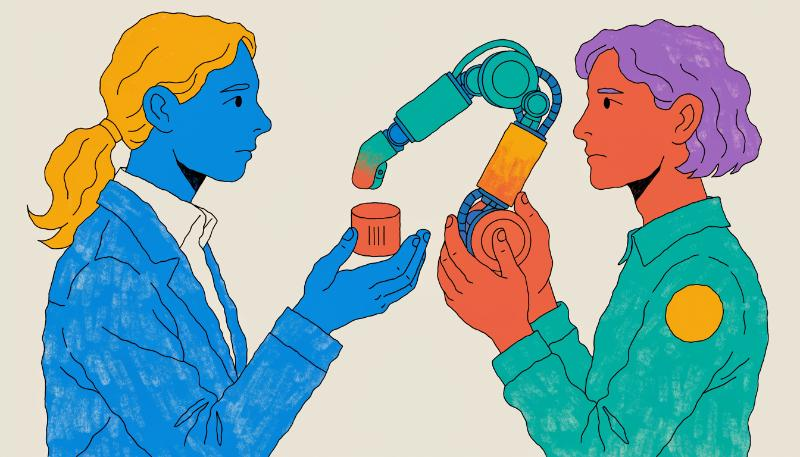

![NTK]()

Anthropic has spent the past year building a reputation as the industry's designated worrier, the lab that talks about AI risk more than it talks about market share (Financial Times). That reputation is now the product. The company is positioning itself as an outside evaluator of AI risk, the kind of independent referee regulators and rival labs could point to when they need someone to say a system is safe enough to ship (CNBC).
The problem is who's asking to be graded. Anthropic doesn't just evaluate frontier AI models. It builds them, sells access to them, and competes directly with OpenAI for the same enterprise contracts and government deals that reward whoever looks safest fastest. A company grading its own product, and its competitor's, is not a new arrangement in American business. It's the arrangement that got credit rating agencies blamed for the 2008 mortgage collapse, when the firms paid to rate mortgage bonds were paid by the banks selling them.
That history didn't stop the debate over what to do about AI from splitting into two camps that mostly talk past each other. One side treats every new model release as a national security emergency. The other treats every safety proposal as an attempt to slow America down while China's labs catch up. A former Pentagon official pushing back on both said the loudest voices in Washington keep missing a middle position that would actually work (Fox News).
That gap is exactly the space Anthropic is stepping into. Neither Washington's doomers nor its accelerationists have built a credible referee, so Anthropic is offering itself for the job, evaluating risk in an industry it profits from expanding. Nobody outside the company has said who checks Anthropic's math, or what happens when its own model scores well on a test its own researchers wrote. The Financial Times called it the mother of all risk factors, a company whose business model and safety mission point in opposite directions and whose stated humility about AI's dangers doubles as the pitch for why customers should trust its version of AI over everyone else's (Financial Times).
Anthropic's next move depends on who takes the bait first — and Washington is already lining up.
Anthropic will almost certainly bring its risk-evaluation framework to regulators before Congress writes a single line requiring it to. That sequencing matters. A voluntary standard adopted first becomes the template everyone measures the eventual law against, the same way industry-drafted model bills have shaped tech legislation for a decade. Watch for Anthropic executives testifying or briefing Hill staff in the next two weeks, framing their evaluator role as something regulators should formalize rather than replace. If that briefing happens quietly, without a competing framework from OpenAI or Google DeepMind in the room, Anthropic gets to set the baseline everyone else has to argue against.
That's the more immediate move. The bigger one is what happens to the two camps the Pentagon veteran described sniping past each other. Neither side has built a credible referee of its own, which means both have an incentive to borrow Anthropic's. The doomer faction gets to point at a framework that treats risk seriously without asking Congress to slow anything down. The accelerationist faction gets to point at a framework built by a company still racing to ship frontier models, proof that safety and speed aren't in conflict. The most likely outcome in the next two weeks is that both camps start citing Anthropic's evaluator pitch as validation, for opposite reasons, without either resolving who checks Anthropic's grading when its own model is the one being graded.
That arrangement won't hold indefinitely, and OpenAI is the actor with the clearest reason to break it first. If Anthropic's framework starts shaping how enterprise customers and federal agencies choose which models to trust, OpenAI loses the fight for a contract before it's even bid. The most likely response is a competing safety framework from OpenAI within the next month, positioned as more rigorous or more independent, which would turn what should be a regulatory question into a marketing war between two labs each grading the other's homework. Sam Altman's team has moved fast on reputational threats before. This one hits both the balance sheet and the narrative Anthropic has spent a year building, and that combination usually forces a response quickly rather than quietly.
If OpenAI actually builds a rival framework, the fight stops being about safety and starts being about who gets to referee the referees.
A third lab could refuse to play either game. Google DeepMind hasn't said which framework it's adopting, and that silence is itself a door. DeepMind sits inside Alphabet, which means it can absorb the cost of an evaluator regulators actually trust — an academic consortium, a national lab, something with no product to sell — without the balance-sheet pressure that's pushing Anthropic and OpenAI toward marketing dressed up as safety science. If DeepMind funds or co-signs an evaluator with no equity stake in the outcome, it doesn't just compete with Anthropic's framework. It exposes the Anthropic-OpenAI fight as two competitors bidding for the referee's chair instead of building one, which is exactly the framing Anthropic has spent a year trying to avoid. That's only reachable now because the Pentagon veteran's middle-ground critique gave a credibility gap a name Washington could point to, and a well-funded third lab is the only actor positioned to fill it without waiting for Congress.
That door only matters if someone in government is looking for it, which brings in the second-order possibility. Congress could subpoena the grading criteria instead of writing new law. The 2008 ratings-agency comparison already sitting in this story is the template. Lawmakers didn't need new securities law to expose Moody's and S&P. They needed hearings that forced the agencies to produce their internal models and show who paid for what rating. The same move works here, and it's newly available because Anthropic itself has volunteered to be evaluated, which means it's already told Washington the evaluation exists. A Senate Commerce or Armed Services staffer doesn't need to write an AI safety bill to demand Anthropic's scoring rubric and OpenAI's competing pitch side by side in a hearing room. That single request, if it happens before either lab locks in a voluntary standard, would do more to answer the who-checks-Anthropic's-math question than any framework either company designs for itself.
The more generative door sits behind both of those. A subpoenaed rubric or a DeepMind-backed evaluator could hand the Pentagon veteran's middle position an actual constituency. Right now that middle ground is one voice in one interview, sandwiched between doomers and accelerationists who both have money riding on their version winning. But if Congress forces the grading criteria into daylight, or if a third lab funds an evaluator with nothing to sell, the middle position stops being a talking point and starts being the only framework left standing that wasn't written by someone grading their own homework. That's not a certainty. It's the first time this year the room has had enough furniture in it to make that outcome buildable instead of theoretical.
The version of this story circulating in Washington isn't the one Anthropic is actually telling — it's the one that lets everyone else avoid the hard question.
Anthropic Says It's the Adult in the Room. That's the Pitch, Not the Finding. The claim, made by Anthropic itself in the framing that's followed it into every regulatory conversation this year, is that the company built its risk-evaluation framework because someone responsible had to, and no one else was stepping up (CNBC). It's an easy claim to believe, because it's true that nobody else built a credible referee first. Washington's doomer-versus-accelerationist fight has produced a lot of testimony and no working framework, which is exactly the vacuum the Pentagon veteran described and exactly the vacuum Anthropic is now filling with a document it wrote about a product it sells.
The people most inclined to believe it are the ones who want the AI fight to have a grown-up in it. Regulators who don't have the technical staff to build their own scoring rubric get to outsource the hard part. Reporters covering a fast-moving industry get a source who sounds cautious instead of a source who sounds like sales. Anthropic gets something more durable than either: a framework that shapes which of its competitors' models get called safe, adopted before Congress writes a rule requiring anyone to ask who profits from the answer.
That's the mechanism, and it's the same one that ran through the mortgage bond market in the years before 2008, when the agencies rating the bonds were paid by the banks selling them. The ratings held up right until they didn't, and by the time regulators subpoenaed the models behind the grades, the damage was already priced into every pension fund in the country. Anthropic isn't rating bonds. It's rating frontier AI systems, including its own, for an industry where the stakes are what get automated, surveilled, or deployed at scale before anyone outside the company has seen the rubric.
The mother of all risk factors.
Financial Times, on Anthropic's dual role as builder and evaluatorNone of that requires bad faith on Anthropic's part to be a problem. It requires only that the company grading the homework has a business reason to want its own paper to score well, and that nobody outside Anthropic has yet been shown the rubric it's using to decide.